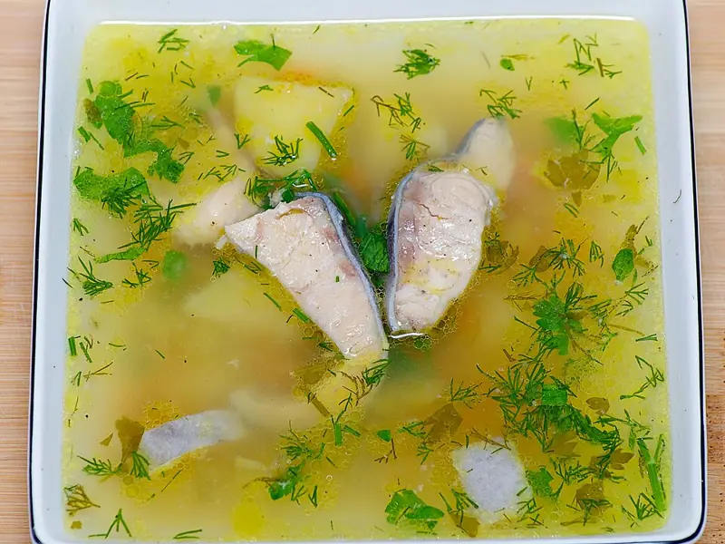

Фото: Pannet, CC BY-SA 4.0

Уха
Прозрачная рыбная уха с картошкой и укропом
45 мин5 порц.239 ккал на порциюБ 27 · Ж 8 · У 15Русская кухня
Продукты на 5 порц.
- Горбуша600 г
- Вода2 л
- Картофель3 шт
- Морковь1 шт
- Лук репчатый1 шт
- Лавровый лист2 шт
- Соль2 ч. л.
- Перец чёрный молотый1 щеп.
- Укроп0,5 пучок
- Зелёный лук по желаниюпо вкусу
Как готовить
- Рыбу почистите, выньте жабры, нарежьте кусками по 4-5 см.
- Доведите воду до кипения, посолите, положите целую луковицу, картофель кубиками и морковь кружками. Варите 10 минут на среднем огне.
- Опустите рыбу, при закипании снимите пену и убавьте огонь до слабого.
- Варите 10-12 минут, пока мясо легко не отходит от кости. Сильно не кипятите, иначе бульон станет мутным.
- Добавьте лавровый лист и перец за 2 минуты до конца. Луковицу достаньте.
- Выключите огонь, добавьте укроп и зелёный лук, дайте настояться 10 минут под крышкой.
Совет. Вместо горбуши подойдут треска, хек или голова с хвостом для наваристости. Рыбу не помешивайте, чтобы куски не развалились.